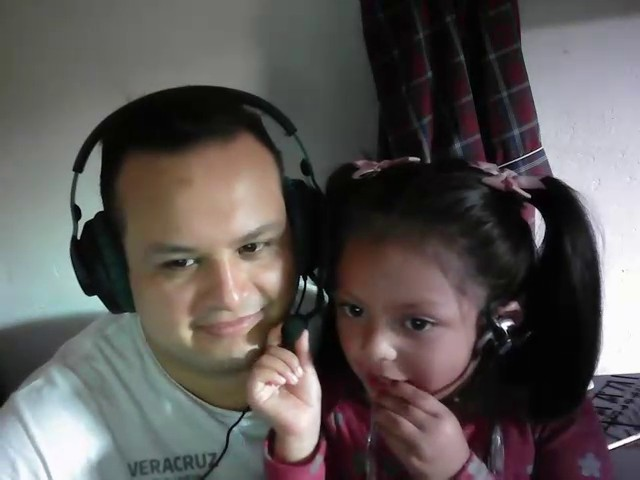
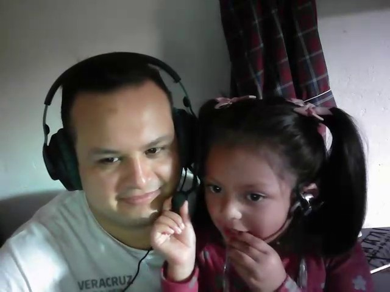

Dany Hertiz
Dediqué parte de mi tiempo libre para crear está página con un dóble propósito. Compartir todo tipo de historias y anécdotas, acompañadas de imágenes y videos, de manera que pueda compartirlos con amigos y familiares, al tiempo que continúo aprendiendo HTML, CSS y Javascript.

 
